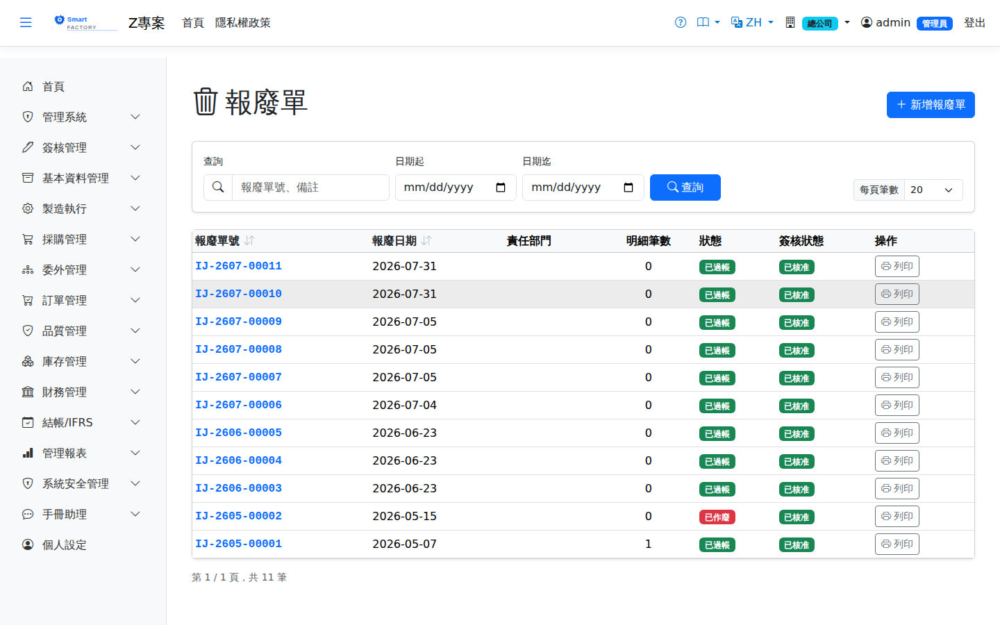

報廢單Scrap Doc
路由：/ScrapDoc | 不堪用存貨報廢出庫Route: /ScrapDoc | Scrapping unusable stock out of inventory
報廢不堪用存貨：過帳自庫存扣除並認列報廢損失。可由 NCR 報廢處置自動產生（產生即已過帳；要回沖時在報廢單明細面板按「作廢」，庫存與分錄一併沖回）。Scraps unusable stock: posting removes it from inventory and recognizes the scrap loss. An NCR scrap disposition can create it automatically (it is posted as soon as it is created; to reverse it, click Void in the scrap document's detail panel and the stock and journal entries are reversed together).

報廢單畫面截圖（示意，實際欄位/資料依權限與查詢條件而異）Scrap document screenshot (illustrative; actual fields and data vary by permission and query criteria)
查詢Search
1
查詢列輸入條件後點「查詢」；欄位標題可點擊排序，清單下方有分頁導航。Enter your criteria on the query bar and click "Search"; column headers can be clicked to sort, and the paging controls sit below the list.
單據狀態Status
| 狀態Status | 說明Guide |
|---|---|
| 草稿 DraftDraft | 已建立未生效，可自由編輯、刪除；需簽核者於此狀態送審。Created but not yet effective; can be freely edited or deleted, and submitted for approval from this status. |
| 待審核Pending approval | 已送審等待簽核，不可編輯；可撤回改回草稿。Submitted and waiting for approval; it cannot be edited, but it can be withdrawn back to draft. |
| 已確認 ConfirmedConfirmed | 簽核核准（或免簽核直接確認）後生效，等待後續作業/過帳。Effective once approved (or confirmed directly when no approval is required), waiting for the next step or for posting. |
| 已過帳 PostedPosted | 庫存/帳務已入帳，單據不可再修改。Stock and accounting have been posted; the document can no longer be changed. |
| 已作廢 VoidVoid | 反向沖銷已過帳內容；作廢原因需留存，不可復原。Reverses what was posted; the void reason is kept and the action cannot be undone. |
作業流程Process
建立報廢單Creating a scrap document
1
點「新增」開啟側欄，填寫報廢單表頭與明細行後儲存（草稿）。Click "Add" to open the panel, fill in the scrap document header and lines, then save (as a draft).
2
點「送審」進入簽核流程；核准後單據自動轉「已確認」。若免簽核，直接點「確認」。Click "Submit" to start the approval flow; the document turns to "Confirmed" once approved. Where no approval is required, click "Confirm" directly.
後續作業Follow-up actions
1
已確認/已過帳單據可點「列印」產生含 QR Code 的正式表單（新分頁開啟）。Confirmed and posted documents can be printed with "Print", producing the official form with a QR code in a new tab.
2
已過帳單據如需沖銷，點「作廢」並填寫原因；系統產生反向庫存/帳務異動。To reverse a posted document, click "Void" and enter a reason; the system creates the reversing stock and accounting entries.
欄位說明Field reference
表頭Header
| 欄位Field | 說明Guide |
|---|---|
| 報廢單號Doc No | 系統採番，不可修改Numbered by the system; not editable |
| 報廢日期Scrap Date | 必填Required 報廢生效日；決定庫存異動與損失認列的期間Effective date of the scrap; it determines the period of the stock movement and the loss recognition |
| 部門Department | 必填Required 承擔報廢損失的部門，費用歸屬依此認列；查詢清單與列印顯示部門名稱Department bearing the scrap loss; the expense is charged accordingly. The list and printout show the department name |
| 報廢原因Scrap Reason | 必填Required 報廢的歸因代碼，供損失分析與改善追蹤Reason code for the scrap, used in loss analysis and improvement tracking |
| 備註Notes | 整張報廢單的補充說明Notes for the whole scrap document |
明細Lines
| 欄位Field | 說明Guide |
|---|---|
| 品號Item | 必填Required 要報廢的料件Item to be scrapped |
| 來源單號Source doc No | 產生此需求的來源單據；由來源單匯入時自動填寫，用於追溯與回寫Source document that raised this demand; filled in automatically when imported from the source, and used for tracing and write-back |
| 數量 / 單位Qty / UOM | 必填Required 報廢數量與計量單位。選了品號後，單位只列該品號的庫存單位與查得到換算的單位（預設庫存單位）；存檔時系統依品號主檔換算成庫存數量入帳，查不到換算的單位會擋下並說明。Scrap quantity and unit of measure. Once a product is chosen, the unit list shows only its stock unit and the units that convert to it (stock unit preselected); on save the system converts to the stock quantity from the product master, and a unit with no conversion is rejected with an explanation. |
| 單價Unit Price | 該批庫存的移動加權平均（AVCO）單位成本，出庫時凍結，不可手動修改Moving average (AVCO) unit cost of that stock, frozen at issue and not editable by hand |
| 倉庫 / 儲位WH / Location | 必填Required 報廢品所在位置；決定從哪一筆庫存扣帳。也可按欄位旁的放大鏡開啟「選擇庫存」視窗，內含該品號各處的倉庫、儲位、批號、帳上數量、已預留與可用量，選取一列後自動回填倉庫與儲位。若該品號另有保留給訂單／工單的量，視窗上方會以黃色提示列出（這些量不落在儲位上，表格的「可用」沒有扣除；出貨時超過「在手 − 保留」會被擋）。Where the scrapped stock is held; it decides which stock is deducted. You can also click the magnifier beside the field to open the stock picker, which lists the warehouse, location, lot, on-hand, reserved and available quantity everywhere that item is held; selecting a row fills in the warehouse and location for you. If some of the item is also reserved for orders or work orders, a yellow notice at the top of the window lists it (those reservations are not tied to a location, so "Available" in the table does not deduct them; shipping more than on-hand minus reserved is blocked). |
| 已作業量Put Away | 倉庫作業實際執行（上架或下架）的累計數量；全部執行完畢後單據自動過帳Cumulative quantity actually processed by warehouse operations (put-away or picking); the document posts automatically once everything is done |
| 備註Notes | 該明細行的個別說明Notes for this individual line |